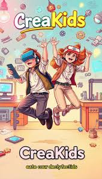
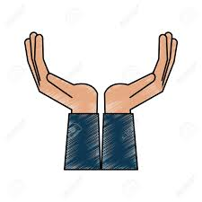
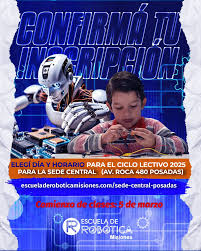
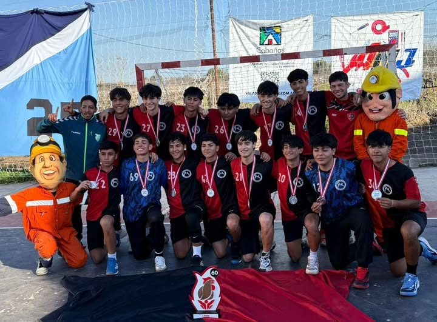

Creakids Innovation

Aplicación orientada a dispositivos móviles que integra la Realidad Aumentada y la Realidad Virtual para que los niños puedan interactuar, aprender y crear de forma intuitiva.
Categoria: Educacion
Detalle
Aplicación orientada a dispositivos móviles que integra la Realidad Aumentada y la Realidad Virtual para que los niños puedan interactuar, aprender y crear de forma intuitiva.
Categoria: Educacion
Detalle
El proyecto tiene como objetivo promover lo social en adultos y adultos mayores
Categoria: Social
Detalle
Escuela Robotica en Misiones
Categoria: Educacion
Detalle
Luego del campeonato obtenido en Gral. Alvear, Mza en el año 2025 se decide techar el polideportivo.
Categoria: Deporte
DetallePlataforma de e-learning a distancia
Categoria: Tecnologia
Detalle